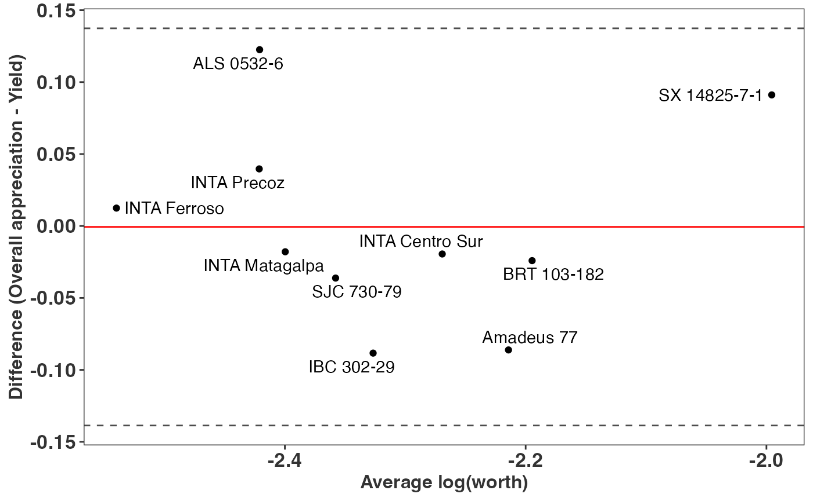

vignettes/vignette-1-trait-prioritization-and-crop-performance.Rmd
vignette-1-trait-prioritization-and-crop-performance.RmdIn this example, we demonstrate a possible workflow to assess crop
variety performance using decentralized on-farm testing data generated
with the tricot approach [1]. We use the
nicabean dataset, which was generated with decentralized
on-farm trials of common bean (Phaseolus vulgaris L.) varieties
in Nicaragua over five seasons (between 2015 and 2016). Following the
tricot approach, farmers tested three randomly assigned varieties of
common bean on their farms as incomplete blocks of size three (from a
set of 10 varieties). Farmers assessed which of the three varieties had
the best and worst performance in eight traits (vigor, architecture,
resistance to pests, resistance to diseases, tolerance to drought,
yield, marketability, and taste). Additionally, farmers provided their
overall appreciation of the varieties, i.e., which variety had the best
and worst performance overall, considering all the traits.
Here, we use the Plackett-Luce model, jointly proposed by Luce (1959) [2] and Plackett (1975) [3]. This model estimates the probability of one variety outperforming all others (worth) for a given trait, based on Luce’s axiom [2]. The model is implemented in R by Turner et al. (2020) with the PlackettLuce package [4].
The nicabean dataset is a list with two data frames. The
first, trial, contains trial data with farmers’ evaluations
ranked from 1 to 3, with 1 being the highest-ranked variety and 3 the
lowest-ranked variety for a given trait and incomplete block. These
rankings were previously transformed from tricot rankings (where
participants indicate the best and worst) to ordinal rankings using the
function rank_tricot(). The second data frame,
covar, contains the covariates associated with the on-farm
trial plots and farmers. This example requires the PlackettLuce,
climatrends, chirps, and ggplot2 packages.
library("gosset")
library("PlackettLuce")
library("climatrends")
library("chirps")
library("ggplot2")
data("nicabean", package = "gosset")
dat = nicabean$trial
covar = nicabean$covar
traits = unique(dat$trait)
dat## id item trait rank
## <int> <chr> <chr> <int>
## 1: 2110 Amadeus 77 Vigor 2
## 2: 2110 IBC 302-29 Vigor 3
## 3: 2110 INTA Ferroso Vigor 1
## 4: 2110 Amadeus 77 Architecture 3
## 5: 2110 IBC 302-29 Architecture 2
## ---
## 15035: 3552 INTA Centro Sur Taste 3
## 15036: 3552 BRT 103-182 Taste 2
## 15037: 3552 IBC 302-29 OverallAppreciation 2
## 15038: 3552 INTA Centro Sur OverallAppreciation 3
## 15039: 3552 BRT 103-182 OverallAppreciation 1To begin the analysis, we transform the ordinal rankings into
Plackett-Luce rankings (a sparse matrix) using the
rank_numeric() function. We iterate over the traits and add
the rankings to a list called R. Since the varieties are ranked in
ascending order (1 being the highest and 3 the lowest), we use the
argument ascending = TRUE.
R = vector(mode = "list", length = length(traits))
for (i in seq_along(traits)) {
dat_i = subset(dat, dat$trait == traits[i])
R[[i]] = rank_numeric(data = dat_i,
items = "item",
input = "rank",
id = "id",
ascending = TRUE)
}Using the function kendallTau(), we can compute the
Kendall tau
()
coefficient [5] to identify the
correlation between overall appreciation and the other traits in the
trial. This approach can be used, for example, to assess the drivers of
farmers’ choices or to prioritize traits for testing in the next stage
of tricot trials (e.g., a simplified version of tricot with no more than
four traits to assess). We use overall appreciation as the reference
trait and compare the Kendall tau values with those of the other eight
traits.
baseline = which(grepl("OverallAppreciation", traits))
kendall = lapply(R[-baseline], function(X){
kendallTau(x = X, y = R[[baseline]])
})
kendall = do.call("rbind", kendall)
kendall$trait = traits[-baseline]The Kendall correlation indicates that farmers prioritized the traits yield ( = 0.749), taste ( = 0.653), and marketability ( = 0.639) when assessing overall appreciation.
## trait kendallTau N_effective Zvalue Pr(>|z|)
## <chr> <dbl> <dbl> <dbl> <chr>
## 2: Architecture 0.3930 58.3120 4.3720 6.1534e-06
## 5: ToleranceToDrought 0.4110 58.3120 4.5720 2.4187e-06
## 1: Vigor 0.4390 58.3120 4.8780 5.3630e-07
## 4: ResistanceToDiseases 0.4490 58.3120 4.9980 2.9022e-07
## 3: ResistanceToPests 0.4630 58.3120 5.1440 1.3446e-07
## 7: Marketability 0.6390 58.3120 7.1000 6.2167e-13
## 8: Taste 0.6530 58.3120 7.2600 1.9329e-13
## 6: Yield 0.7490 58.3120 8.3250 4.2193e-17We can visualize the distances and the distribution of the kendall
correlation coefficients. For that we use the function
kendallTau_boostrap() which resamples the data using a
bootstrapping approach to draw an uniform distribution in the data.
# lapply the bootstrap function and draw 50 data points
kendall = lapply(R[-baseline], function(x){
kendallTau_bootstrap(x,
R[[baseline]],
nboot = 50,
seed = 1206)
})
# put it in a data.frame
kendall = data.frame(trait = rep(traits[-baseline], each = 50),
kendallTau = unlist(kendall))
# define levels of traits to sort them out from highest to lowest kendall tau
lvls = unique(kendall$trait[order(kendall$kendallTau)])
kendall$trait = factor(kendall$trait, levels = lvls)
# plot the coefficients
ggplot(kendall, aes(y = trait, x = kendallTau)) +
geom_boxplot() +
labs(y = "", x = "Correlation with the 'Overall appreciation'") +
theme_minimal()For each trait, we fit a Plackett-Luce model using the function
PlackettLuce() from the package of the same name. This
enables us to continue analyzing the trial data using other functions
available in the gosset package.
mod = lapply(R, PlackettLuce)The worth_map() function provides a visual tool to
assess and compare variety performance across different traits. The
values represented in a worth map are log-worth estimates. From
a breeder or product developer perspective, the function
worth_map() is a valuable tool for identifying variety
performance across multiple traits and selecting crossing materials.
To examine the effect of climate factors on yield, we incorporate
agro-climatic covariates into a Plackett-Luce tree model. For
simplicity, we use total rainfall (Rtotal) derived from CHIRPS data
[6], accessed in R through the
chirps package [7].
Additional covariates, such as temperature, can also be incorporated
into a Plackett-Luce tree using packages like ag5Tools
[8] or nasapower [9] as proposed by the studies of van Etten et
al. (2019) [10], de Sousa et al. (2021)
[11] and Brown et al. (2022) [12].
The CHIRPS data is requested via the chirps package, and
the returned data should be formatted as a matrix. Note that this
process may take several minutes to complete.
dates = c(min(covar[, "planting_date"]),
max(covar[, "planting_date"]) + 70)
chirps = get_chirps(covar[, c("longitude","latitude")],
dates = as.character(dates),
as.matrix = TRUE,
server = "ClimateSERV")We compute the rainfall indices for the period from the planting date
to the first 45 days of plant growth using the rainfall()
function from the climatrends package [13].
newnames = dimnames(chirps)[[2]]
newnames = gsub("chirps-v2.0.", "", newnames)
newnames = gsub("[.]", "-", newnames)
dimnames(chirps)[[2]] = newnames
rain = rainfall(chirps, day.one = covar$planting_date, span = 45)To link the rankings to covariates, they must be coerced into a
‘grouped_rankings’ object. This is done using the group()
function from the PlackettLuce package. For this example, we retain only
the rankings corresponding to yield.
## 1 2 3
## "INTA Ferroso > I ..." "BRT 103-182 > IB ..." "INTA Ferroso > I ..."
## 4 5 6
## "BRT 103-182 > IB ..." "BRT 103-182 > IB ..." "BRT 103-182 > AL ..."Now we fit a Plackett-Luce tree with the climate covariates.
## Plackett-Luce tree
##
## Model formula:
## G ~ Rtotal
##
## Fitted party:
## [1] root
## | [2] Rtotal <= 193.8153: n = 393
## | ALS 0532-6 Amadeus 77 BRT 103-182 IBC 302-29 INTA Centro Sur
## | 0.0000000 0.6269536 0.7018178 0.6510282 0.5419017
## | INTA Ferroso INTA Matagalpa INTA Precoz SJC 730-79 SX 14825-7-1
## | 0.3993557 0.3775061 0.3858863 0.4045355 0.6933340
## | [3] Rtotal > 193.8153: n = 164
## | ALS 0532-6 Amadeus 77 BRT 103-182 IBC 302-29 INTA Centro Sur
## | 0.0000000 -0.5307674 -0.6414091 -0.9089876 -0.5821163
## | INTA Ferroso INTA Matagalpa INTA Precoz SJC 730-79 SX 14825-7-1
## | -1.1910556 -0.6922428 -0.8152149 -0.5724198 -0.2688304
##
## Number of inner nodes: 1
## Number of terminal nodes: 2
## Number of parameters per node: 10
## Objective function (negative log-likelihood): 977.2531The following is an example of the plot generated using the
plot() function in the gosset package. The functions
node_labels(), node_rules(), and
top_items() can be used to identify the splitting variables
in the tree, the rules applied at each split, and the top-performing
items in each node.
node_labels(tree)## [1] "Rtotal"
node_rules(tree)## node rules
## 1 2 Rtotal <= 193.815301895142
## 2 3 Rtotal > 193.815301895142
top_items(tree, top = 3)## Node2 Node3
## 1 BRT 103-182 ALS 0532-6
## 2 SX 14825-7-1 SX 14825-7-1
## 3 IBC 302-29 Amadeus 77
plot(tree, ref = "Amadeus 77")The function reliability() can be used to compute the
reliability estimates [14] of the
evaluated common bean varieties in each of the resulting nodes of the
Plackett-Luce tree. This helps identify varieties with a higher
probability of outperforming a variety check (Amadeus 77). For
simplicity, we present only the varieties with a reliability score
0.5.
reliability(tree, ref = "Amadeus 77")## node item reliability reliabilitySE worth
## <int> <chr> <dbl> <dbl> <dbl>
## 2: 2 Amadeus 77 0.5000 0.0350 0.1138
## 3: 2 BRT 103-182 0.5187 0.0360 0.1227
## 4: 2 IBC 302-29 0.5060 0.0348 0.1166
## 10: 2 SX 14825-7-1 0.5166 0.0333 0.1216
## 11: 3 ALS 0532-6 0.6297 0.0559 0.1769
## 12: 3 Amadeus 77 0.5000 0.0582 0.1041
## 20: 3 SX 14825-7-1 0.5651 0.0528 0.1352The results show that three varieties marginally outperform Amadeus 77 under drier growing conditions (Rtotal 193.82 mm), while two varieties demonstrate superior yield performance under higher rainfall conditions (Rtotal 193.82 mm) compared to the reference. This approach is valuable for identifying superior varieties tailored to different target population of environments.
For instance, the variety ALS 0532-6 exhibits weak performance in the overall yield ranking but outperforms all others in the subgroup with higher rainfall conditions. Combining rankings with socio-economic covariates could further enhance the identification of superior varieties for specific market segments, as proposed by Voss et al. (2024) [15]
A more comprehensive approach to assessing the performance of
varieties involves using “overall appreciation,” as this trait is
expected to capture the performance of a variety not only for yield but
also for all other traits prioritized by farmers. To support this
hypothesis, we use the compare() function, which applies
the method proposed by Bland and Altman (1986) [16] to assess the agreement between two
different measures. Here, we compare overall appreciation and yield. If
both measures completely agree, all the varieties should be centered at
0 on the Y-axis.
Overall = PlackettLuce(R[[baseline]])
Yield = PlackettLuce(R[[yield]])
compare(Overall, Yield) +
labs(x = "Average log(worth)",
y = "Difference (Overall appreciation - Yield)")
The chart reveals no complete agreement between overall appreciation and yield. For instance, variety SX 14825-7-1 exhibits superior performance for overall appreciation compared to yield. By examining the log-worth estimates in the worth map, we can argue that the superior performance of this variety is likely influenced by traits such as taste, marketability, and disease resistance. However, these aspects were not captured when assessing yield alone.
This vignette demonstrates a detailed workflow for analyzing tricot data in the context of on-farm testing trials. By integrating farmers’ evaluations, agro-climatic covariates, and trait-specific performance metrics, the analysis provides valuable insights into the performance and adaptability of bean varieties across diverse environmental and socio-economic contexts.
Key findings reveal that while yield remains a critical trait, other traits such as taste, marketability, and disease resistance significantly influence farmers’ overall appreciation of varieties. The use of Kendall correlation highlighted the traits most strongly associated with farmers’ preferences, while the worth maps and Plackett-Luce models provided a clear visualization of variety performance across traits. Furthermore, the analysis of rainfall effects using Plackett-Luce trees underscored the importance of agro-climatic factors in determining the relative performance of varieties, enabling the identification of genotype-by-environment interactions.
The vignette also emphasizes the value of using “overall appreciation” as a comprehensive indicator of variety performance. Comparing this measure with yield alone demonstrated the limitations of focusing exclusively on yield, as traits such as taste and marketability can significantly enhance variety appeal.
Finally, the reliability analysis and tree-based exploration of rainfall effects provide insights for breeding programs and product development. These tools enable researchers and practitioners to identify superior varieties tailored to specific target population of environments and market needs. By combining statistical rigor with participatory approaches, this workflow supports more effective and farmer-centric decision-making in crop improvement.
This vignette illustrates how decentralized data, participatory methods, and advanced statistical models can work together to enhance breeding and selection strategies for common bean and other crops.